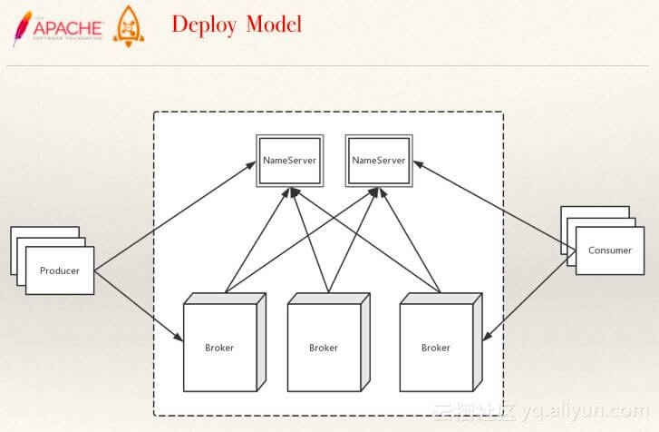
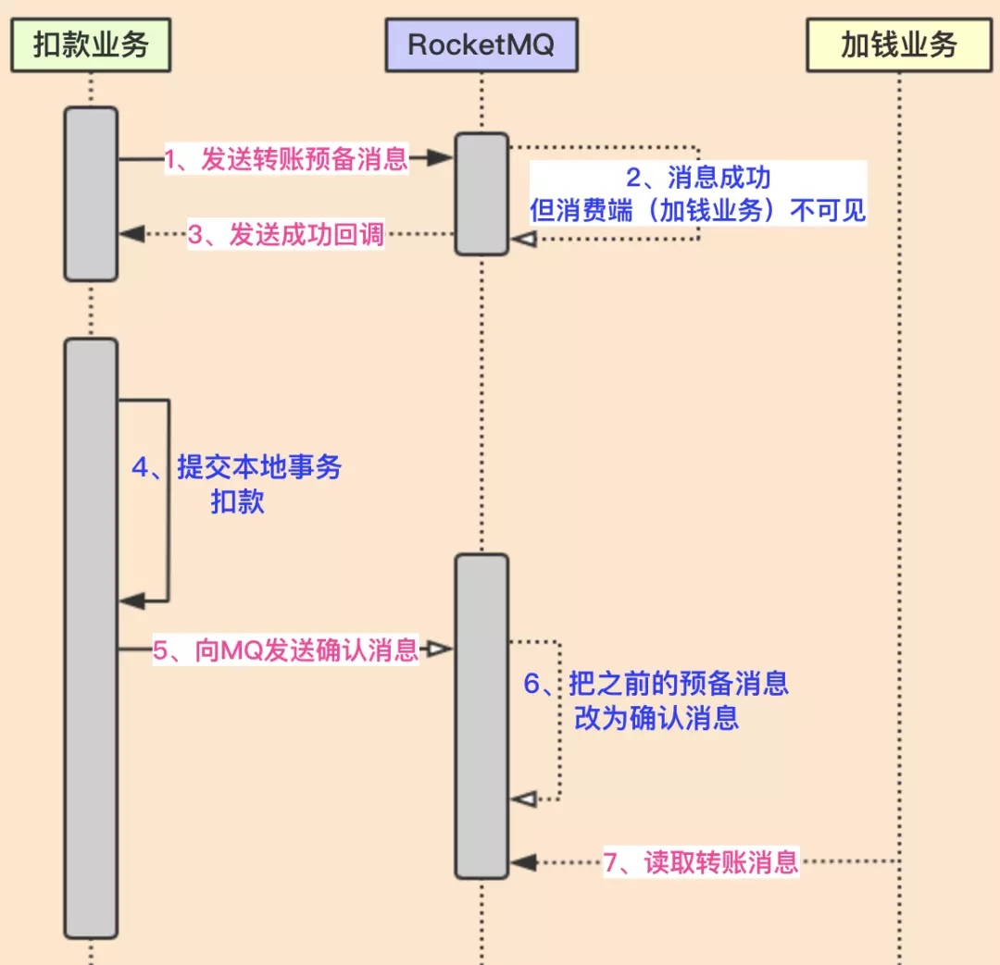
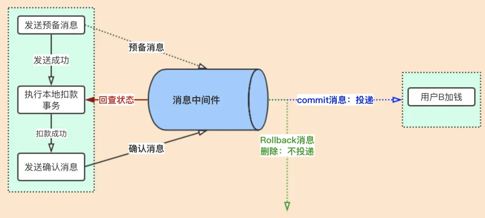

<!DOCTYPE html>


<html lang="zh-CN" >


<head>
  <meta charset="utf-8" />
    
  <meta name="viewport" content="width=device-width, initial-scale=1, maximum-scale=1" />
  <title>
     anzhen.tech
  </title>
  <meta name="generator" content="hexo-theme-yilia-plus">
  
  <link rel="shortcut icon" href="/favicon.ico" />
  
  
<link rel="stylesheet" href="/dist/main.css">

  
  <script src="https://cdn.jsdelivr.net/npm/pace-js@1.0.2/pace.min.js"></script>
  
  

  

<link rel="alternate" href="/atom.xml" title="anzhen.tech" type="application/atom+xml">
</head>

</html>

<body>
  <div id="app">
    <main class="content on">
      <section class="outer">
  <article id="page-" class="article article-type-page" itemscope
  itemprop="blogPost" data-scroll-reveal>

  <div class="article-inner">
    

    

    

    
    <div class="article-entry" itemprop="articleBody">
      
      

      
      <h1 id="RocketMQ"><a href="#RocketMQ" class="headerlink" title="RocketMQ"></a>RocketMQ</h1><ol>
<li><p>RocketMQ 由哪些角色组成？<br> </p>
<ul>
<li>生产者（Producer）：负责产生消息，生产者向消息服务器发送由业务应用程序系统生成的消息。</li>
<li>消费者（Consumer）：负责消费消息，消费者从消息服务器拉取信息并将其输入用户应用程序。</li>
<li>消息服务器（Broker）：是消息存储中心，主要作用是接收来自 Producer 的消息并存储， Consumer 从这里取得消息。</li>
<li>名称服务器（NameServer）：用来保存 Broker 相关 Topic 等元信息并给 Producer ，提供 Consumer 查找 Broker 信息。</li>
</ul>
</li>
<li><p>请描述下 RocketMQ 的整体流程？</p>
<pre><code></code></pre><ul>
<li>启动 Namesrv，Namesrv起 来后监听端口，等待 Broker、Producer、Consumer 连上来，相当于一个路由控制中心。</li>
<li>Broker 启动，<strong>跟所有的 Namesrv 保持长连接</strong>，定时发送心跳包。心跳包中，包含当前 Broker 信息(IP+端口等)以及存储所有 Topic 信息。注册成功后，Namesrv 集群中就有 Topic 跟 Broker 的映射关系。</li>
<li>收发消息前，先创建 Topic 。创建 Topic 时，需要指定该 Topic 要存储在 哪些 Broker上。也可以在发送消息时自动创建Topic。</li>
<li>Producer 发送消息。启动时，先跟 Namesrv 集群中的其中一台建立长连接，并从Namesrv 中获取当前发送的 Topic 存在哪些 Broker 上，然后跟对应的 Broker 建立长连接，直接向 Broker 发消息</li>
<li>Consumer 消费消息。Consumer 跟 Producer 类似。跟其中一台 Namesrv 建立长连接，获取当前订阅 Topic 存在哪些 Broker 上，然后直接跟 Broker 建立连接通道，开始消费消息。</li>
</ul>
</li>
<li><p>请说说你对 Namesrv 的了解？</p>
<ul>
<li>Namesrv 用于存储 Topic、Broker 关系信息，功能简单，稳定性高。<ul>
<li>多个 Namesrv 之间相互没有通信，单台 Namesrv 宕机不影响其它 Namesrv 与集群。多个 Namesrv 之间的信息共享，通过 Broker 主动向多个 Namesrv 都发起心跳。正如上文所说，Broker 需要跟所有 Namesrv 连接。</li>
<li>即使整个 Namesrv 集群宕机，已经正常工作的 Producer、Consumer、Broker 仍然能正常工作，但新起的 Producer、Consumer、Broker 就无法工作。(这点和 Dubbo 有些不同，不会缓存 Topic 等元信息到本地文件。)</li>
</ul>
</li>
<li>Namesrv 压力不会太大，平时主要开销是在维持心跳和提供 Topic-Broker 的关系数据。但有一点需要注意，Broker 向 Namesr 发心跳时，会带上当前自己所负责的所有 Topic 信息，如果 Topic 个数太多（万级别），会导致一次心跳中，就 Topic 的数据就几十 M，网络情况差的话，网络传输失败，心跳失败，导致 Namesrv 误认为 Broker 心跳失败。</li>
</ul>
</li>
<li><p>如何配置 Namesrv 地址到生产者和消费者？</p>
<ul>
<li><strong>编程方式</strong>，就像 producer.setNamesrvAddr(“ip:port”) 。</li>
<li>Java 启动参数设置，使用 rocketmq.namesrv.addr 。</li>
<li>环境变量，使用 NAMESRV_ADDR 。</li>
<li>HTTP 端点，例如说：<a href="http://namesrv.rocketmq.xxx.com" target="_blank" rel="noopener">http://namesrv.rocketmq.xxx.com</a> 地址，通过 DNS 解析获得 Namesrv 真正的地址。</li>
</ul>
</li>
<li><p>请说说你对 Broker 的了解？</p>
<ul>
<li>高并发读写服务。Broker的高并发读写主要是依靠以下两点:<ul>
<li>消息顺序写，所有 Topic 数据同时只会写一个文件，一个文件满1G ，再写新文件，真正的顺序写盘，使得发消息 TPS 大幅提高。</li>
<li>消息随机读，RocketMQ 尽可能让读命中系统 Pagecache ，因为操作系统访问 Pagecache 时，即使只访问 1K 的消息，系统也会提前预读出更多的数据，在下次读时就可能命中 Pagecache ，减少 IO 操作。</li>
</ul>
</li>
<li>负载均衡与动态伸缩。<ul>
<li>负载均衡：Broker 上存 Topic 信息，Topic 由多个队列组成，队列会平均分散在多个 Broker 上，而 Producer 的发送机制保证消息尽量平均分布到所有队列中，最终效果就是所有消息都平均落在每个 Broker 上。</li>
<li>动态伸缩能力（非顺序消息）：Broker 的伸缩性体现在两个维度：Topic、Broker。<ul>
<li>Topic 维度：假如一个 Topic 的消息量特别大，但集群水位压力还是很低，就可以扩大该 Topic 的队列数， Topic 的队列数跟发送、消费速度成正比。<ul>
<li>Topic 的队列数一旦扩大，就无法很方便的缩小。因为，生产者和消费者都是基于相同的队列数来处理。如果真的想要缩小，只能新建一个 Topic ，然后使用它。</li>
</ul>
</li>
<li>Broker 维度：如果集群水位很高了，需要扩容，直接加机器部署 Broker 就可以。Broker 启动后向 Namesrv 注册，Producer、Consumer 通过 Namesrv 发现新Broker，立即跟该 Broker 直连，收发消息。<ul>
<li>新增的 Broker 想要下线，想要下线也比较麻烦，暂时没特别好的方案。大体的前提是，消费者消费完该 Broker 的消息，生产者不往这个 Broker 发送消息。</li>
</ul>
</li>
</ul>
</li>
</ul>
</li>
<li>高可用 &amp; 高可靠。<ul>
<li>高可用：集群部署时一般都为主备，备机实时从主机同步消息，如果其中一个主机宕机，备机提供消费服务，但不提供写服务。</li>
<li>高可靠：所有发往 Broker 的消息，有同步刷盘和异步刷盘机制。<ul>
<li>同步刷盘时，消息写入物理文件才会返回成功。</li>
<li>异步刷盘时，只有机器宕机，才会产生消息丢失，Broker 挂掉可能会发生，但是机器宕机崩溃是很少发生的，除非突然断电。如果 Broker 挂掉，未同步到硬盘的消息，还在 Pagecache 中呆着。</li>
</ul>
</li>
</ul>
</li>
<li>Broker 与 Namesrv 的心跳机制。<ul>
<li>单个 Broker 跟所有 Namesrv 保持心跳请求，心跳间隔为30秒，心跳请求中包括当前 Broker 所有的 Topic 信息。</li>
<li>Namesrv 会反查 Broker 的心跳信息，如果某个 Broker 在 2 分钟之内都没有心跳，则认为该 Broker 下线，调整 Topic 跟 Broker 的对应关系。但此时 Namesrv 不会主动通知Producer、Consumer 有 Broker 宕机。也就说，只能等 Producer、Consumer 下次定时拉取 Topic 信息的时候，才会发现有 Broker 宕机。</li>
</ul>
</li>
</ul>
</li>
<li><p>Broker 如何实现消息的存储？</p>
<ul>
<li>?????????????????????????</li>
</ul>
</li>
<li><p>请说说你对 Producer 的了解？</p>
<ul>
<li>获得 Topic-Broker 的映射关系。<ul>
<li>Producer 启动时，也需要指定 Namesrv 的地址，从 Namesrv 集群中选一台建立长连接。如果该 Namesrv 宕机，会自动连其他 Namesrv ，直到有可用的 Namesrv 为止。</li>
<li>生产者每 30 秒从 Namesrv 获取 Topic 跟 Broker 的映射关系，更新到本地内存中。然后再跟 Topic 涉及的所有 Broker 建立长连接，每隔 30 秒发一次心跳。</li>
<li>在 Broker 端也会每 10 秒扫描一次当前注册的 Producer ，如果发现某个 Producer 超过 2 分钟都没有发心跳，则断开连接。</li>
</ul>
</li>
<li>生产者端的负载均衡。<ul>
<li>生产者发送时，会自动轮询当前所有可发送的broker，一条消息发送成功，下次换另外一个broker发送，以达到消息平均落到所有的broker上。</li>
<li>假如某个 Broker 宕机，意味生产者最长需要 30 秒才能感知到。在这期间会向宕机的 Broker 发送消息。当一条消息发送到某个 Broker 失败后，会自动再重发 2 次，假如还是发送失败，则抛出发送失败异常。客户端里会自动轮询另外一个 Broker 重新发送，这个对于用户是透明的。</li>
</ul>
</li>
</ul>
</li>
<li><p>Producer 发送消息有几种方式？</p>
<ul>
<li>Producer 发送消息，有三种方式：<ul>
<li>同步方式</li>
<li>异步方式</li>
<li>Oneway 方式</li>
</ul>
</li>
</ul>
</li>
<li><p>请说说你对 Consumer 的了解？</p>
<ul>
<li>获得 Topic-Broker 的映射关系。<ul>
<li>Consumer 启动时需要指定 Namesrv 地址，与其中一个 Namesrv 建立长连接。消费者每隔 30 秒从 Namesrv 获取所有Topic 的最新队列情况，这意味着某个 Broker 如果宕机，客户端最多要 30 秒才能感知。连接建立后，从 Namesrv 中获取当前消费 Topic 所涉及的 Broker，直连 Broker 。</li>
<li>Consumer 跟 Broker 是长连接，会每隔 30 秒发心跳信息到Broker 。Broker 端每 10 秒检查一次当前存活的 Consumer ，若发现某个 Consumer 2 分钟内没有心跳，就断开与该 Consumer 的连接，并且向该消费组的其他实例发送通知，触发该消费者集群的负载均衡。</li>
</ul>
</li>
<li>消费者端的负载均衡。根据消费者的消费模式不同，负载均衡方式也不同。<ul>
<li>集群消费：一个 Topic 可以由同一个消费这分组( Consumer Group )下所有消费者分担消费。<ul>
<li>具体例子：假如 TopicA 有 6 个队列，，每个消费者分组起了 2 个消费者实例，那么每个消费者负责消费 3 个队列。如果再增加一个消费者分组相同消费者实例，即当前共有 3 个消费者同时消费 6 个队列，那每个消费者负责 2 个队列的消费。</li>
</ul>
</li>
<li>广播消费：每个消费者消费 Topic 下的所有队列。</li>
</ul>
</li>
</ul>
</li>
<li><p>消费者消费模式有几种？</p>
<ul>
<li>集群消费：一个 Consumer Group 中的各个 Consumer 实例分摊去消费消息，即一条消息只会投递到一个 Consumer Group 下面的一个实例。<ul>
<li>实际上，每个 Consumer 是平均分摊 Message Queue 的去做拉取消费。例如某个 Topic 有 3 个队列，其中一个 Consumer Group 有 3 个实例（可能是 3 个进程，或者 3 台机器），那么每个实例只消费其中的 1 个队列。</li>
<li>而由 Producer 发送消息的时候是轮询所有的队列，所以消息会平均散落在不同的队列上，可以认为队列上的消息是平均的。那么实例也就平均地消费消息了。</li>
<li>这种模式下，消费进度的存储会持久化到 Broker 。</li>
<li>当新建一个 Consumer Group 时，默认情况下，该分组的消费者会从 min offset 开始重新消费消息。</li>
</ul>
</li>
<li>广播消费：消息将对一 个Consumer Group 下的各个 Consumer 实例都投递一遍。即即使这些 Consumer 属于同一个Consumer Group ，消息也会被 Consumer Group 中的每个 Consumer 都消费一次。<ul>
<li>实际上，是一个消费组下的每个消费者实例都获取到了 Topic 下面的每个 Message Queue 去拉取消费。所以消息会投递到每个消费者实例。</li>
<li>这种模式下，消费进度会存储持久化到实例本地。</li>
</ul>
</li>
</ul>
</li>
<li><p>消费者获取消息有几种模式？</p>
<ul>
<li>PushConsumer推送模式（虽然 RocketMQ 使用的是长轮询）的消费者。消息的能及时被消费。使用非常简单，内部已处理如线程池消费、流控、负载均衡、异常处理等等的各种场景。</li>
<li>PullConsumer拉取模式的消费者。应用主动控制拉取的时机，怎么拉取，怎么消费等。主动权更高。但要自己处理各种场景。</li>
<li>决绝绝大多数场景下，我们只会使用 PushConsumer 推送模式。</li>
</ul>
</li>
<li><p>如何对消息进行重放？</p>
<ul>
<li>消费位点就是一个数字，把 Consumer Offset 改一下，就可以达到重放的目的了。</li>
</ul>
</li>
<li><p>什么是顺序消息？如何实现？</p>
<ul>
<li>消费消息的顺序要同发送消息的顺序一致。由于 Consumer 消费消息的时候是针对 Message Queue 顺序拉取并开始消费，且一条 Message Queue 只会给一个消费者（集群模式下），所以能够保证同一个消费者实例对于 Queue 上消息的消费是顺序地开始消费（不一定顺序消费完成，因为消费可能并行）。</li>
<li>RocketMQ 提供了两种顺序级别：<ul>
<li>顺序消息包括两块：Producer 的顺序发送，和 Consumer 的顺序消费。</li>
<li>普通顺序消息 ：Producer 将相关联的消息发送到相同的消息队列。</li>
<li>严格顺序消息 ：在【普通顺序消息】的基础上，Consumer 严格顺序消费。</li>
</ul>
</li>
</ul>
</li>
<li><p>顺序消息扩容的过程中，如何在不停写的情况下保证消息顺序？</p>
<ul>
<li>成倍扩容，实现扩容前后，同样的 key，hash 到原队列，或者 hash 到新扩容的队列。</li>
<li>扩容前，记录旧队列中的最大位点。</li>
<li>对于每个 Consumer Group ，保证旧队列中的数据消费完，再消费新队列，也即：先对新队列进行禁读即可。</li>
</ul>
</li>
<li><p>什么是定时消息？如何实现？</p>
<ul>
<li>定时消息，是指消息发到 Broker 后，不能立刻被 Consumer 消费，要到特定的时间点或者等待特定的时间后才能被消费。</li>
<li>可通过配置文件，自定义每个延迟级别对应的延迟时间。当然，这是全局的。</li>
<li>如果想要实现任一时刻的延迟消息，比较简单的方式是插入延迟消息到数据库中，然后通过定时任务轮询，到达指定时间，发送到 RocketMQ 中。</li>
<li>实现原理：<ul>
<li>定时消息发送到 Broker 后，会被存储 Topic 为 SCHEDULE_TOPIC_XXXX 中，并且所在 Queue 编号为延迟级别 - 1 。（需要 -1 的原因是，延迟级别是从 1 开始的。如果延迟级别为 0 ，意味着无需延迟。）</li>
<li>Broker 针对每个 SCHEDULE_TOPIC_XXXX 的队列，都创建一个定时任务，顺序扫描到达时间的延迟消息，重新存储到延迟消息原始的 Topic 的原始 Queue 中，这样它就可以被 Consumer 消费到。<ul>
<li>为什么是“顺序扫描到达时间的延迟消息”？因为先进 SCHEDULE_TOPIC_XXXX 的延迟消息，在其所在的队列，意味着先到达延迟时间。</li>
<li>会不会存在重复扫描的情况？每个 SCHEDULE_TOPIC_XXXX 的扫描进度，会每 10s 存储到 config/delayOffset.json 文件中，所以正常情况下，不会存在重复扫描。如果异常关闭，则可能导致重复扫描。</li>
</ul>
</li>
</ul>
</li>
</ul>
</li>
<li><p>什么是消息重试？如何实现？</p>
<ul>
<li>消息重试，Consumer 消费消息失败后，要提供一种重试机制，令消息再消费一次。</li>
<li>Consumer 会将消费失败的消息发回 Broker，进入延迟消息队列。即，消费失败的消息，不会立即消费。也就是说，消息重试是构建在定时消息之上的功能。</li>
<li>消息重试的主要流程：<ul>
<li>Consumer 消费失败，将消息发送回 Broker 。</li>
<li>Broker 收到重试消息之后置换 Topic ，存储消息。</li>
<li>Consumer 会拉取该 Topic 对应的 retryTopic 的消息。</li>
<li>Consumer 拉取到 retryTopic 消息之后，置换到原始的 Topic ，把消息交给 Listener 消费。<ul>
<li>Consumer 消息失败后，会将消息的 Topic 修改为 %RETRY% + Topic 进行，添加 “RETRY_TOPIC” 属性为原始 Topic ，然后再返回给 Broker 中。</li>
<li>Broker 收到重试消息之后，会有两次修改消息的 Topic 。<ul>
<li>首先，会将消息的 Topic 修改为 %RETRY% + ConsumerGroup ，因为这个消息是当前消费这分组消费失败，只能被这个消费组所重新消费。注意，消费者会默认订阅 Topic 为 %RETRY% + ConsumerGroup 的消息。</li>
<li>然后，会将消息的 Topic 修改为 SCHEDULE_TOPIC_XXXX ，添加 “REAL_TOPIC” 属性为 %RETRY% + ConsumerGroup ，因为重试消息需要延迟消费。</li>
<li>Consumer 会拉取该 Topic 对应的 retryTopic 的消息，此处的 retryTopic 为 %RETRY% + ConsumerGroup 。<br>Consumer 拉取到 retryTopic 消息之后，置换到原始的 Topic ，因为有消息的 “RETRY_TOPIC” 属性是原始 Topic ，然后把消息交给 Listener 消费。</li>
</ul>
</li>
</ul>
</li>
</ul>
</li>
</ul>
</li>
<li><p>基于RocketMQ的分布式事务解决方案<br></p>
<ul>
<li><p>1、在扣款之前，先发送预备消息</p>
</li>
<li><p>2、发送预备消息成功后，执行本地扣款事务</p>
</li>
<li><p>3、扣款成功后，再发送确认消息</p>
</li>
<li><p>4、消息端（加钱业务）可以看到确认消息，消费此消息，进行加钱</p>
<blockquote>
<p>注意：上面的确认消息可以为commit消息，可以被订阅者消费；也可以是Rollback消息，即执行本地扣款事务失败后，提交rollback消息，即删除那个预备消息，订阅者无法消费</p>
</blockquote>
</li>
<li><p>异常1：如果发送预备消息失败，下面的流程不会走下去；这个是正常的</p>
</li>
<li><p>异常2：如果发送预备消息成功，但执行本地事务失败；这个也没有问题，因为此预备消息不会被消费端订阅到，消费端不会执行业务。</p>
</li>
<li><p>异常3：如果发送预备消息成功，执行本地事务成功，但发送确认消息失败；这个就有问题了，因为用户A扣款成功了，但加钱业务没有订阅到确认消息，无法加钱。这里出现了数据不一致。<br></p>
</li>
<li><p>RocketMq解决上面的问题，核心思路就是【状态回查】，也就是RocketMq会定时遍历commitlog中的预备消息。</p>
<blockquote>
<p>因为预备消息最终肯定会变为commit消息或Rollback消息，所以遍历预备消息去回查本地业务的执行状态，如果发现本地业务没有执行成功就rollBack，如果执行成功就发送commit消息。</p>
</blockquote>
</li>
<li></li>
</ul>
</li>
</ol>

      
      <!-- reward -->
      
      <div id="reward-btn">
        打赏
      </div>
      
    </div>
    
    
      <!-- copyright -->
      
        <div class="declare">
          <ul class="post-copyright">
            <li>
              <i class="ri-copyright-line"></i>
              <strong>版权声明： </strong s>
              本博客所有文章除特别声明外，均采用 <a href="https://www.apache.org/licenses/LICENSE-2.0.html" rel="external nofollow"
                target="_blank">Apache License 2.0</a> 许可协议。转载请注明出处！
            </li>
          </ul>
        </div>
        
    <footer class="article-footer">
      
          
<div class="share-btn">
      <span class="share-sns share-outer">
        <i class="ri-share-forward-line"></i>
        分享
      </span>
      <div class="share-wrap">
        <i class="arrow"></i>
        <div class="share-icons">
          
          <a class="weibo share-sns" href="javascript:;" data-type="weibo">
            <i class="ri-weibo-fill"></i>
          </a>
          <a class="weixin share-sns wxFab" href="javascript:;" data-type="weixin">
            <i class="ri-wechat-fill"></i>
          </a>
          <a class="qq share-sns" href="javascript:;" data-type="qq">
            <i class="ri-qq-fill"></i>
          </a>
          <a class="douban share-sns" href="javascript:;" data-type="douban">
            <i class="ri-douban-line"></i>
          </a>
          <!-- <a class="qzone share-sns" href="javascript:;" data-type="qzone">
            <i class="icon icon-qzone"></i>
          </a> -->
          
          <a class="facebook share-sns" href="javascript:;" data-type="facebook">
            <i class="ri-facebook-circle-fill"></i>
          </a>
          <a class="twitter share-sns" href="javascript:;" data-type="twitter">
            <i class="ri-twitter-fill"></i>
          </a>
          <a class="google share-sns" href="javascript:;" data-type="google">
            <i class="ri-google-fill"></i>
          </a>
        </div>
      </div>
</div>

<div class="wx-share-modal">
    <a class="modal-close" href="javascript:;"><i class="ri-close-circle-line"></i></a>
    <p>扫一扫，分享到微信</p>
    <div class="wx-qrcode">
      
    </div>
</div>

<div id="share-mask"></div>
      
      

    </footer>

  </div>

  
  

  

  
  
<!-- valine评论 -->
<div id="vcomments-box">
    <div id="vcomments">
    </div>
</div>
<script src="//cdn1.lncld.net/static/js/3.0.4/av-min.js"></script>
<script src='https://cdn.jsdelivr.net/npm/valine@1.3.10/dist/Valine.min.js'></script>
<script>
    new Valine({
        el: '#vcomments',
        app_id: '',
        app_key: '',
        path: window.location.pathname,
        notify: 'false',
        verify: 'false',
        avatar: 'mp',
        placeholder: '给我的文章加点评论吧~',
        recordIP: true
    });
    const infoEle = document.querySelector('#vcomments .info');
    if (infoEle && infoEle.childNodes && infoEle.childNodes.length > 0) {
        infoEle.childNodes.forEach(function (item) {
            item.parentNode.removeChild(item);
        });
    }
</script>
<style>
    #vcomments-box {
        padding: 5px 30px;
    }

    @media screen and (max-width: 800px) {
        #vcomments-box {
            padding: 5px 0px;
        }
    }

    #vcomments-box #vcomments {
        background-color: #fff;
    }

    .v .vlist .vcard .vh {
        padding-right: 20px;
    }

    .v .vlist .vcard {
        padding-left: 10px;
    }
</style>

  

  

</article>
</section>
      <footer class="footer">
  <div class="outer">
    <ul class="list-inline">
      <li>
        &copy;
        2015-2020
        Anzhen
      </li>
      <li>
        
        Powered by
        
        
        <a href="https://hexo.io" target="_blank">Hexo</a> Theme <a href="https://github.com/Shen-Yu/hexo-theme-ayer" target="_blank">Ayer</a>
        
      </li>
    </ul>
    <ul class="list-inline">
      <li>
        
        
        <span>
  <i>PV:<span id="busuanzi_value_page_pv"></span></i>
  <i>UV:<span id="busuanzi_value_site_uv"></span></i>
</span>
        
      </li>
      
      <li>
        <!-- cnzz统计 -->
        
        <script type="text/javascript" src='https://s9.cnzz.com/z_stat.php?id=1278069914&amp;web_id=1278069914'></script>
        
      </li>
    </ul>
  </div>
</footer>
      <div class="float_btns">
        <div class="totop" id="totop">
  <i class="ri-arrow-up-line"></i>
</div>

<div class="todark" id="todark">
  <i class="ri-moon-line"></i>
</div>

      </div>
    </main>
    <aside class="sidebar on">
      <button class="navbar-toggle"></button>
<nav class="navbar">
  
  <div class="logo">
    <a href="/"></a>
  </div>
  
  <ul class="nav nav-main">
    
    <li class="nav-item">
      <a class="nav-item-link" href="/">主页</a>
    </li>
    
    <li class="nav-item">
      <a class="nav-item-link" href="/archives">归档</a>
    </li>
    
    <li class="nav-item">
      <a class="nav-item-link" href="/categories">分类</a>
    </li>
    
    <li class="nav-item">
      <a class="nav-item-link" href="/tags">标签</a>
    </li>
    
    <li class="nav-item">
      <a class="nav-item-link" href="/interview">面试</a>
    </li>
    
    <li class="nav-item">
      <a class="nav-item-link" href="/source-code">源码</a>
    </li>
    
    <li class="nav-item">
      <a class="nav-item-link" href="/adg">算法</a>
    </li>
    
    <li class="nav-item">
      <a class="nav-item-link" href="/2019/about">关于我</a>
    </li>
    
  </ul>
</nav>
<nav class="navbar navbar-bottom">
  <ul class="nav">
    <li class="nav-item">
      
      <a class="nav-item-link nav-item-search"  title="搜索">
        <i class="ri-search-line"></i>
      </a>
      
      
      <a class="nav-item-link" target="_blank" href="/atom.xml" title="RSS Feed">
        <i class="ri-rss-line"></i>
      </a>
      
    </li>
  </ul>
</nav>
<div class="search-form-wrap">
  <div class="local-search local-search-plugin">
  <input type="search" id="local-search-input" class="local-search-input" placeholder="Search...">
  <div id="local-search-result" class="local-search-result"></div>
</div>
</div>
    </aside>
    <script>
      if (window.matchMedia("(max-width: 768px)").matches) {
        document.querySelector('.content').classList.remove('on');
        document.querySelector('.sidebar').classList.remove('on');
      }
    </script>
    <div id="mask"></div>

<!-- #reward -->
<div id="reward">
  <span class="close"><i class="ri-close-line"></i></span>
  <p class="reward-p"><i class="ri-cup-line"></i>请我喝杯咖啡吧~</p>
  <div class="reward-box">
    
    <div class="reward-item">
      
      <span class="reward-type">支付宝</span>
    </div>
    
    
    <div class="reward-item">
      
      <span class="reward-type">微信</span>
    </div>
    
  </div>
</div>
    
<script src="/js/jquery-2.0.3.min.js"></script>


<script src="/js/lazyload.min.js"></script>


<script>
  try {
    var typed = new Typed("#subtitle", {
      strings: ['越努力，越美好', '', ''],
      startDelay: 0,
      typeSpeed: 200,
      loop: true,
      backSpeed: 100,
      showCursor: true
    });
  } catch (err) {
  }

</script>


<script src="https://cdn.jsdelivr.net/npm/jquery-modal@0.9.2/jquery.modal.min.js"></script>
<link rel="stylesheet" href="https://cdn.jsdelivr.net/npm/jquery-modal@0.9.2/jquery.modal.min.css">
<script src="https://cdn.jsdelivr.net/npm/justifiedGallery@3.7.0/dist/js/jquery.justifiedGallery.min.js"></script>

<script src="/dist/main.js"></script>


<!-- Root element of PhotoSwipe. Must have class pswp. -->
<div class="pswp" tabindex="-1" role="dialog" aria-hidden="true">

    <!-- Background of PhotoSwipe. 
         It's a separate element as animating opacity is faster than rgba(). -->
    <div class="pswp__bg"></div>

    <!-- Slides wrapper with overflow:hidden. -->
    <div class="pswp__scroll-wrap">

        <!-- Container that holds slides. 
            PhotoSwipe keeps only 3 of them in the DOM to save memory.
            Don't modify these 3 pswp__item elements, data is added later on. -->
        <div class="pswp__container">
            <div class="pswp__item"></div>
            <div class="pswp__item"></div>
            <div class="pswp__item"></div>
        </div>

        <!-- Default (PhotoSwipeUI_Default) interface on top of sliding area. Can be changed. -->
        <div class="pswp__ui pswp__ui--hidden">

            <div class="pswp__top-bar">

                <!--  Controls are self-explanatory. Order can be changed. -->

                <div class="pswp__counter"></div>

                <button class="pswp__button pswp__button--close" title="Close (Esc)"></button>

                <button class="pswp__button pswp__button--share" style="display:none" title="Share"></button>

                <button class="pswp__button pswp__button--fs" title="Toggle fullscreen"></button>

                <button class="pswp__button pswp__button--zoom" title="Zoom in/out"></button>

                <!-- Preloader demo http://codepen.io/dimsemenov/pen/yyBWoR -->
                <!-- element will get class pswp__preloader--active when preloader is running -->
                <div class="pswp__preloader">
                    <div class="pswp__preloader__icn">
                        <div class="pswp__preloader__cut">
                            <div class="pswp__preloader__donut"></div>
                        </div>
                    </div>
                </div>
            </div>

            <div class="pswp__share-modal pswp__share-modal--hidden pswp__single-tap">
                <div class="pswp__share-tooltip"></div>
            </div>

            <button class="pswp__button pswp__button--arrow--left" title="Previous (arrow left)">
            </button>

            <button class="pswp__button pswp__button--arrow--right" title="Next (arrow right)">
            </button>

            <div class="pswp__caption">
                <div class="pswp__caption__center"></div>
            </div>

        </div>

    </div>

</div>

<link rel="stylesheet" href="https://cdn.jsdelivr.net/npm/photoswipe@4.1.3/dist/photoswipe.min.css">
<link rel="stylesheet" href="https://cdn.jsdelivr.net/npm/photoswipe@4.1.3/dist/default-skin/default-skin.min.css">
<script src="https://cdn.jsdelivr.net/npm/photoswipe@4.1.3/dist/photoswipe.min.js"></script>
<script src="https://cdn.jsdelivr.net/npm/photoswipe@4.1.3/dist/photoswipe-ui-default.min.js"></script>

<script>
    function viewer_init() {
        let pswpElement = document.querySelectorAll('.pswp')[0];
        let $imgArr = document.querySelectorAll(('.article-entry img:not(.reward-img)'))

        $imgArr.forEach(($em, i) => {
            $em.onclick = () => {
                // slider展开状态
                // todo: 这样不好，后面改成状态
                if (document.querySelector('.left-col.show')) return
                let items = []
                $imgArr.forEach(($em2, i2) => {
                    let img = $em2.getAttribute('data-idx', i2)
                    let src = $em2.getAttribute('data-target') || $em2.getAttribute('src')
                    let title = $em2.getAttribute('alt')
                    // 获得原图尺寸
                    const image = new Image()
                    image.src = src
                    items.push({
                        src: src,
                        w: image.width || $em2.width,
                        h: image.height || $em2.height,
                        title: title
                    })
                })
                var gallery = new PhotoSwipe(pswpElement, PhotoSwipeUI_Default, items, {
                    index: parseInt(i)
                });
                gallery.init()
            }
        })
    }
    viewer_init()
</script>


<script src="/js/busuanzi-2.3.pure.min.js"></script>


<script type="text/javascript" src="https://js.users.51.la/20544303.js"></script>

    
  </div>
</body>

</html>